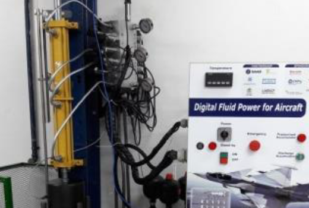
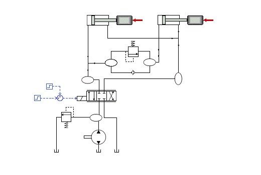
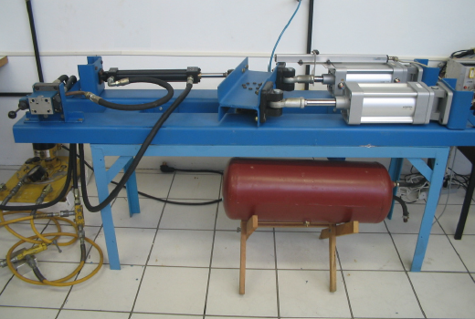

Atuação
Desenvolvimento do produto
Product development
A condução de projetos baseado em metodologias e sistematização dos processos assegura maior potencial de sucesso no desenvolvimento de novos produto.
Conducting projects based on methodologies and systematization of processes ensures greater potential for success in new product development.
- Aplicação de metodologia no desenvolvimento de novos produtos
- Condução de reuniões estratégicas para o planejamento do projeto
- Levantamento e classificação das especificações de projeto
- Uso de ferramentas para o projeto conceitual (árvore de funções e meios, matriz morfológica)
- Uso de modelos analíticos ou simulação computacional para avaliação dos conceitos gerados
- Especificação das fases do projeto (entradas, atividades, ferramentas e entregas esperadas)
- Elaboração e acompanhamento do cronograma de projeto
- Application of methodology for new product development
- Conducting strategic meetings for project planning
- Project requirements survey and classification
- Use of tools for conceptual design (function-means tree, morphological matrix)
- Use of analytical models or computer simulation to evaluate new concepts
- Project phases specification (inputs, activities, tools and expected deliverables)
- Project schedule elaboration and monitoring
Análise estrutural
Structural analysis
Para a criação de máquinas que realizem determinadas funções é necessário o uso de ferramentas de projetos adequadas desde a concepção até o detalahamento para fabricação.
In order to create machines that perform certain functions, it is necessary to use proper design tools from conception to technical production specifications.
- Modelagem 3D de componentes e sistemas
- Análise computacional de tensões em componetes críticos
- Cálculos analíticos de máquinas e estruturas
- Seleção de material
- Especificação de transmissões mecânicas e máquinas rotativas
- Seleção de elementos de máquinas (correias, correntes, engrenagens, acoplamentos, entre outros)
- Uso e adequação de padrões internacionais
- 3D Modeling of components and systems
- Computational stress analysis in critical components
- Analytical calculation of machines and structures
- Material selection
- Specification of mechanical transmissions and rotating machines
- Machine elements selection (belts, chain drives, gears, coplings, among others)
- Use and adequacy of international standards
Hidráulica e Pneumática
Hydraulics and Pneumatics
Em dúvida sobre o sistema de controle hidráulico ou pneumático mais adequado para a sua aplicação? Entre em contato para mais informações sobre esse ou outros serviços.
In doubt about the most suitable hydraulic or pneumatic control system for your application? Get in touch for more information on this or others services.
- Especificação técnica de componentes (unidades de potência, cilindros, válvulas, mangueiras, conexões)
- Melhoria de projetos existentes do ponto de vista energético e operacional
- Automação de processos usando acionamentos elétricos
- Elaboração de manuais de operação de máquinas
- Avaliação de eficiência energética
- Modelagem e simulação dinâmica de sistemas
- Suporte técnico para instalações
- Identificação de problemas
- Implementação de lógicas de acionamentos em CLP
- Seleção de sensores e transdutores
- Component technical specifications (power units, cylinders, valves, hoses, connectors)
- Improvement of existing projects in terms of energy consumption and operability
- Process automation using electric commands
- Elaboration of machine operation manuals
- Energy efficiency asssessment
- Modelling and simulation of dynamic systems
- Assembly technical support
- Systems troubleshooting
- PLC programming implementation
- Selection of sensors and transducers
Fabricação mecânica
Mechanical production
O planejamento da manutenção eficiente representa o diferencial para empresas que buscam reduzir custos e aumentar a confiabilidade das suas instalações.
Efficient maintenance planning is imperative for companies that seek to reduce costs and increase the reliability of their facilities.
- Desenho 2D e 3D
- Especificação de tolerâncias geométricas e dimensionais
- Elaboração de projetos com adequação aos melhores processos de fabricação
- Elaboração de lista de materiais
- Dimensionamento de matéria-prima para fabricação de componentes
- Suporte ao setor de produção
- 2D e 3D drawing
- Dimensional and geometric product specifications
- Design for manufacture
- Material list elaboration
- Material sizing for component prodution
- Production team suport
Galeria
Gallery

Industrial

Movimentação de materiais

Construção

Construção

Construção

Construção
Mais detalhes no PORTFÓLIO
More details in PORTFOLIO
Contato
Contact